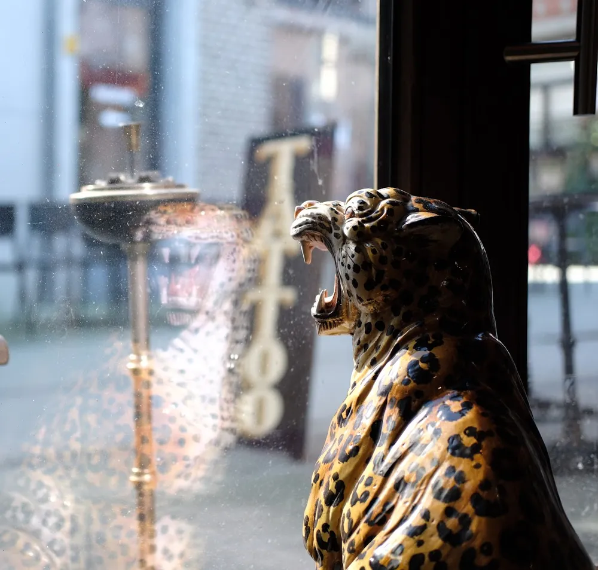
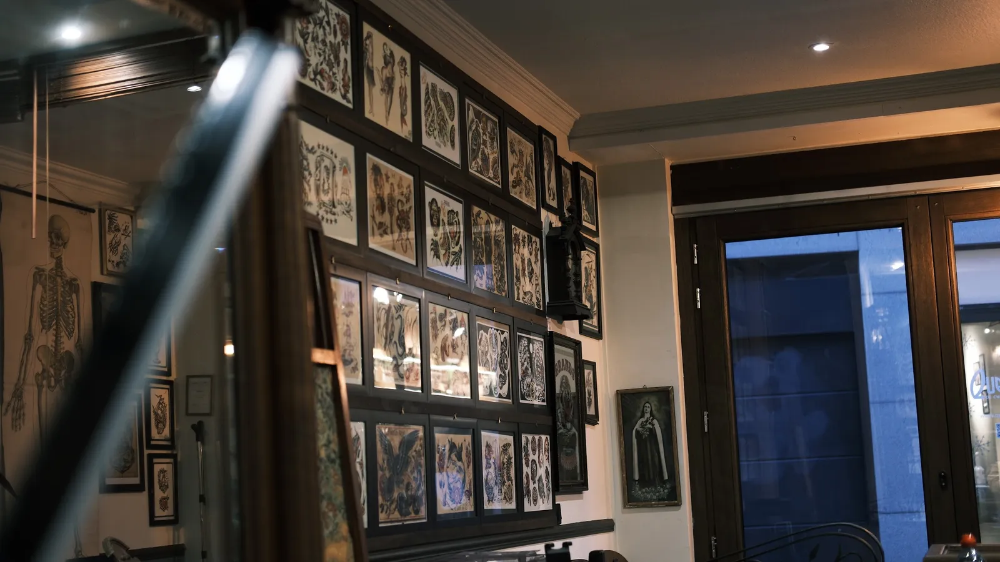
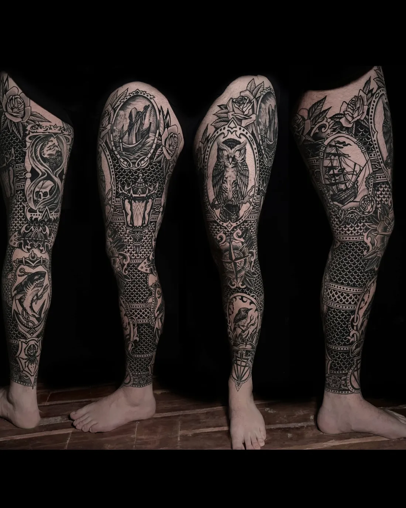
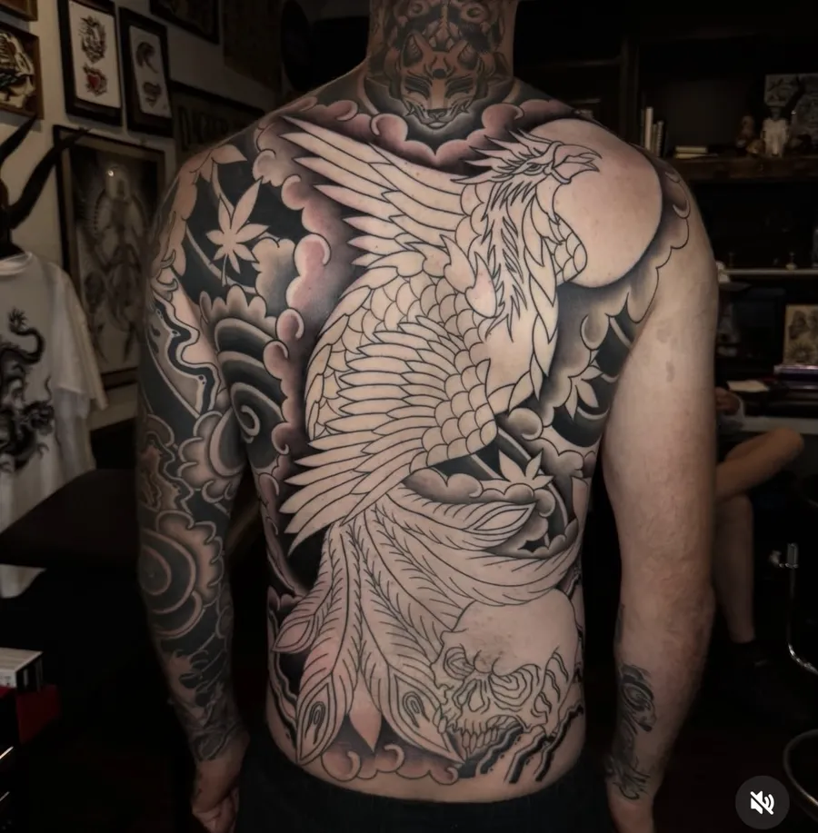
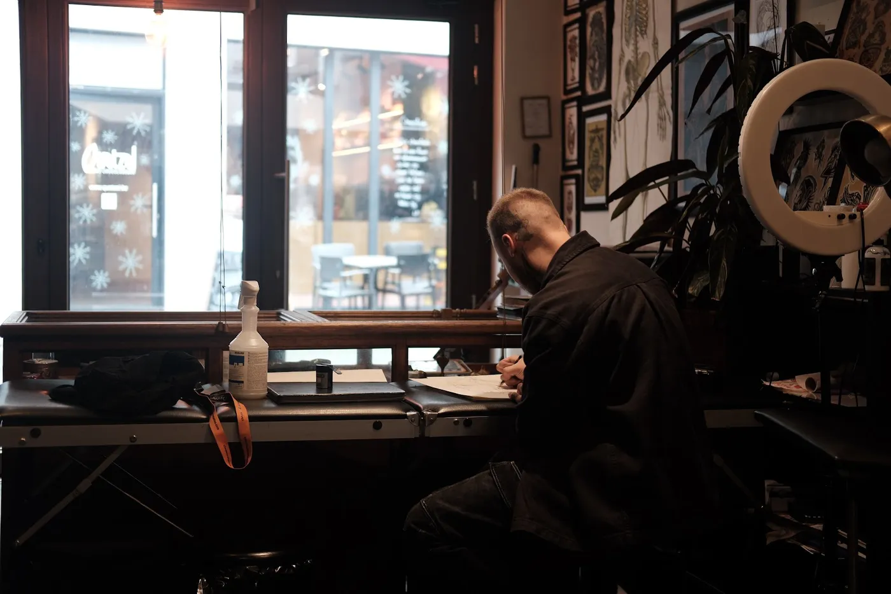

Zonder afspraakWalk-in
Wil je een kleine tattoo en hem dezelfde dag laten zetten? Kom gerust binnen en vraag of we tijd hebben. Lukt het niet meteen, dan helpen we je zo snel mogelijk.
Maandag tot zaterdag, 12u tot 18u

Traditional en bold blackwork van Bert en Gilles. Wandel binnen voor een babbel, een koffie of een kleine walk-in. Voor iets groters tekenen we samen tot het helemaal klopt.
Iedereen komt bij Dagger Moon op zijn eigen manier binnen. Een klein ding op dezelfde dag, een flash van de muur of een groot stuk dat over meerdere sessies loopt: het begint altijd met een gesprek aan de toog.

Zonder afspraakWil je een kleine tattoo en hem dezelfde dag laten zetten? Kom gerust binnen en vraag of we tijd hebben. Lukt het niet meteen, dan helpen we je zo snel mogelijk.
 Van de muur
Van de muurDe muren hangen vol ingekaderde flash. Zie je iets dat je meteen wil, wijs het aan. Elk jaar rond Halloween is er ook onze flash day: start om 13u, first come, first serve.
 Op maat
Op maatVertel ons wat je in gedachten hebt en we tekenen het uit in onze stijl. Tussendoor vragen we telkens of het ontwerp goed zit of nog moet worden bijgestuurd. Je afspraak leg je vast met een voorschot via Payconiq.
Bert brengt een donkere kant in traditional: bold blackwork met middeleeuwse en gotische beelden. Gilles zet er zijn eigen schedels, rozen en vogels naast. Alles hieronder is in de shop gezet.




"This style is called framed traditional because, as you can guess, it's framed. And traditional."Bert, op Instagram

Bert runt Dagger Moon op het Hemelrijk. Gilles is de tweede vaste artiest, en geregeld schuift er een gastartiest aan. Er staat muziek op, de koffie is klaar en niemand kijkt raar op als je gewoon even komt kijken.
"Al jarenlang vaste klant, en altijd enorm tevreden van ieder resultaat. Helemaal op maat en in eigen stijl, Bert is dé tattoo expert in Hasselt."
"Keer op keer wandel ik er tevreden buiten, hij maakt de vetste dingen. Hij vraagt ook steeds of het ontwerp ok is of als er nog iets aangepast moet worden."
"Top kerels! Leuke tattoo shop met goede muziek en lekkere koffie."

Midden in het centrum van Hasselt. Binnenlopen mag, een berichtje vooraf ook.
Hemelrijk 7
3500 Hasselt
Ik maakte deze demo voor jullie om te tonen wat er kan. Na een kort gesprek maak ik er iets veel persoonlijkers van, helemaal naar jullie wens.
Vrijblijvend. Ik kom langs of we bellen.
Op maat, op jullie eigen domein.
Geen voorschot. Jullie betalen pas als alles klaar is.
Hosting, domeinnaam en kleine wijzigingen, zoals nieuwe openingsuren.
Omdat een voorbeeld meer zegt dan een mail. Zo zien jullie meteen wat er kan, en het kost jullie niets.
Nee. Het gesprek is vrijblijvend. Vinden jullie het niks, dan is het daarmee gedaan.
Na ons gesprek staat jullie site binnen 10 tot 14 dagen online.
Zeker. Jullie domeinnaam kan gewoon blijven, de nieuwe site komt in de plaats van de oude.
Nee, dat doe ik op basis van ons gesprek. Eigen foto's zijn mooi meegenomen, maar niet nodig om te starten.